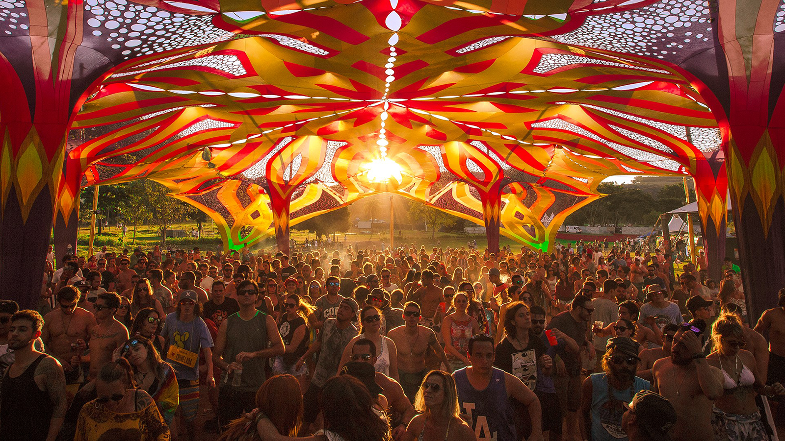
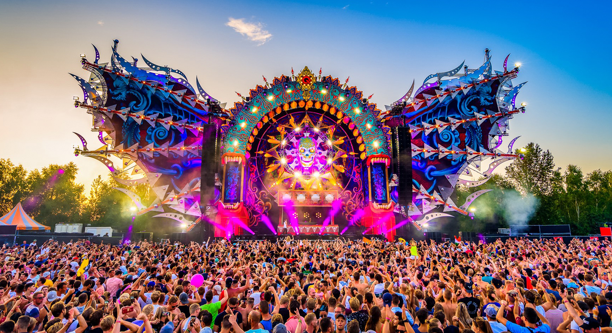
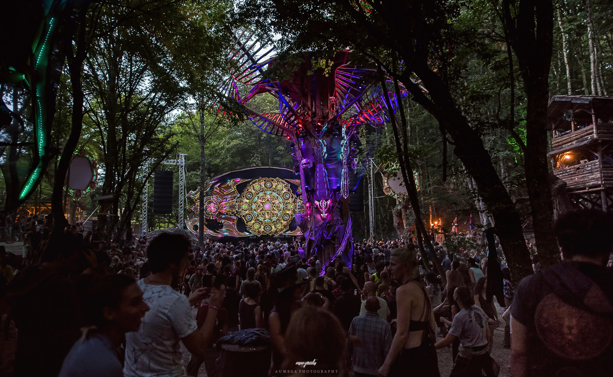
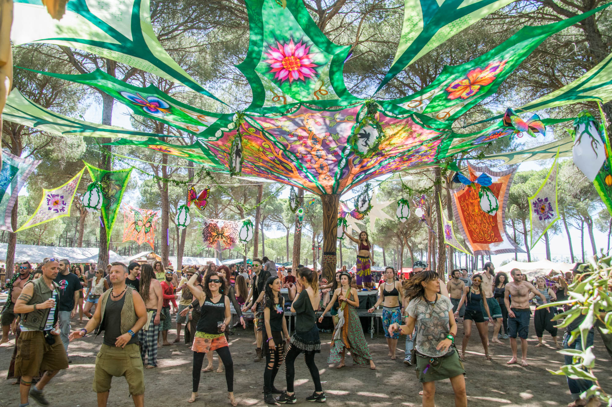
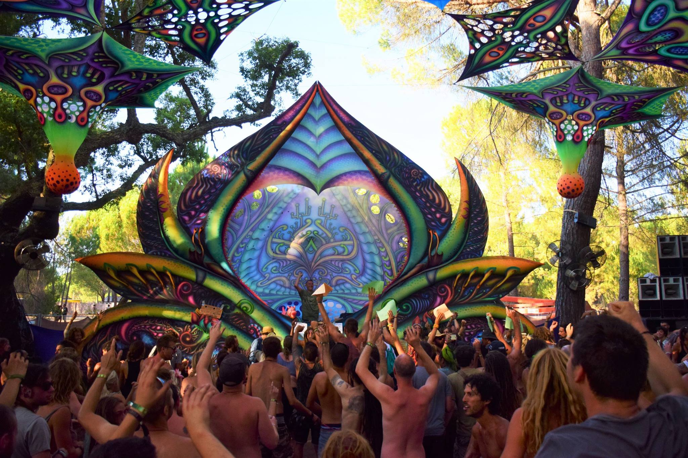

Subgêneros do Psytrance
O psytrance é muito mais que música: é uma viagem sonora e espiritual, capaz de conduzir a consciência por estados de expansão, introspecção e conexão coletiva. Cada vertente é um portal único, oferecendo diferentes energias, ritmos e atmosferas — do brilho solar do Full On à densidade hipnótica do Dark Psy, da profundidade da floresta ao fluxo meditativo do Progressive Psy. Explore cada caminho e descubra como a música pode se tornar um verdadeiro ritual de transformação interior.
Full On
O Full On é o psytrance em sua forma mais explosiva, energética e melódica. Surgiu em Israel no início dos anos 2000, influenciado por nomes como Astrix, GMS e Infected Mushroom
Características sonoras
- 145–148 BPM
- Linhas de baixo fortes e contínuas
- Melodias épicas, brilhantes e “uplifting”
- Drops marcados e construções intensas
Atmosfera
É o estilo que mais cria sensação de euforia, luz, abertura do coração e “dança com o peito pra frente”. Tem uma energia solar, expansiva — perfeita para amanheceres em festivais.
Aspecto espiritual
O Full On conduz para estados de celebração, lembrando rituais solares e experiências de expansão alegre. Ele eleva vibração e ajuda o dançarino a entrar em flow sem perder o enraizamento.
Dark Psy
O Dark Psy é o lado noturno do psytrance — profundo, intenso, rápido e completamente hipnótico. Cresceu no final dos anos 90 e começo dos 2000, especialmente em cenas da Rússia, Alemanha e Brasil.
Características sonoras
- 150–175 BPM
- Basslines secos e frenéticos
- Atmosferas densas, alienígenas, às vezes caóticas
- Poucas melodias, muitos efeitos psicodélicos
Aspecto espiritual
O Dark Psy funciona como um ritual de sombra, ajudando a expurgar bloqueios e atravessar zonas internas difíceis com coragem. Não é “maligno”: é transformador.
Forest
O Forest é como entrar numa floresta viva no escuro — cheia de criaturas, texturas orgânicas e psicodelia pulsante. Surgiu da fusão entre dark e elementos ritualísticos nórdicos.
Características sonoras
- 148–160 BPM
- Timbres orgânicos, sons de animais, texturas naturais
- Atmosfera sombria, mas brincalhona
- Ritmos tribais, padrões caóticos porém harmônicos
Atmosfera
É a trilha para uma expedição espiritual na mata, onde tudo tem vida. A vibe é misteriosa, mística e ancestral.
Aspecto espiritual
O Forest abre um campo xamânico profundo — te coloca em contato com simbolismos da natureza, arquétipos animais e processos de cura selvagem.
Progressive Psy (ou Prog Psy)
O “Prog” é a vertente mais hipnótica, minimalista e dançante do psytrance. Tomou força nos anos 2000 (especialmente na Suécia e Austrália).
Características sonoras
- 135–142 BPM
- Bassline mais groovado, menos frenético
- Construções longas, repetitivas e meditativas
- Atmosfera limpa, futurista e suave
Atmosfera
Perfeito para entrar em transe estável. O corpo dança lento, mas profundo, com uma sensação de fluidez contínua.
Aspecto espiritual
É como uma meditação em movimento, criando espaço interno, clareza mental e um estado mental contemplativo e suave.
Hi-Tech
O Hi-Tech é o primo hiperacelerado do Dark Psy, com estética futurista e caótica.
Características sonoras
- 170–230 BPM
- Efeitos digitalizados, glitch, caos controlado
- Estruturas altamente imprevisíveis
Atmosfera
Parece entrar num software vivo, num universo digital consciente.
Aspecto espiritual
Trabalha o desprendimento total — o ego simplesmente não acompanha.
